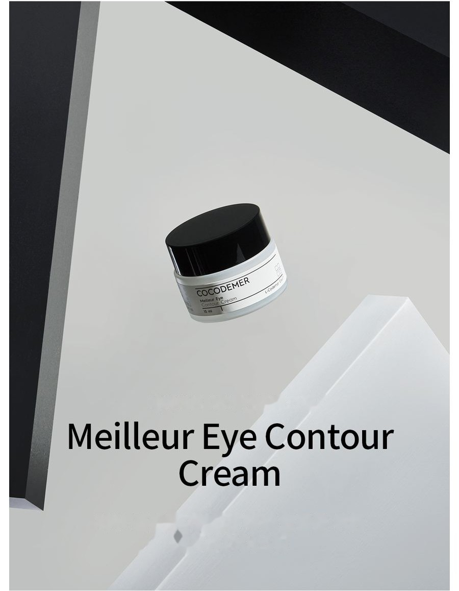
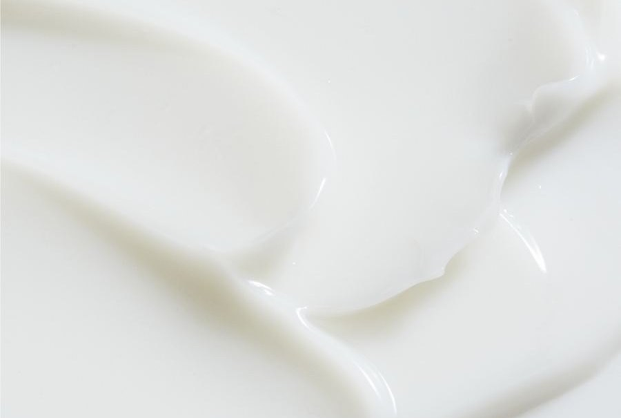
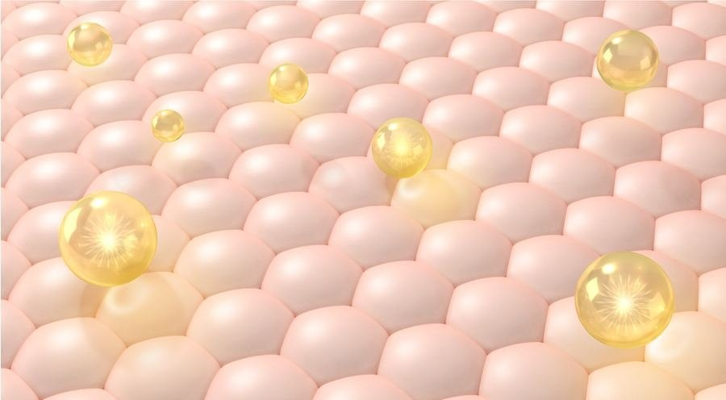

COCODEMER Meilleur Eye Contour Cream
| Volume | 15ml |
|---|---|
| Suitable for | All skin types |
| Key technology | L-CODEMAR ELIXIR™ |
| Manufacturer · Responsible distributor | JUNGCOS CO., LTD. / COCODEMER CO., LTD. |
This product is not yet listed on the Smart Store. For purchases, please use the store, or contact us through the B2B inquiry.

A breathable eye cream that veils imperfections while letting the skin breathe
A richly nourishing, close-fitting eye cream for firmer-looking skin
Forms a continuous veil of moisture for eye care that misses nothing, keeping the eye area looking alive.
Highly concentrated nutrients settle into every fine line and form a close-fitting shield over the delicate eye area, leaving it firmer and better nourished.
Its soft texture hugs the skin and melts in, and the light formula lets the skin breathe, so it can be used across the whole face.

2% hybrid soft-focus powder leaves a smooth, powdery feel. Velvet matrix technology gives natural coverage, clings closely and carries concentrated nourishment deep into the skin, leaving the eye area supple and resilient.
Collagen and collagen peptide bring back firm, springy skin, while a range of phyto-moist ingredients seals a veil of moisture over the surface —
hydration that never runs dry.
Key Active Code
- MoMoisturizing
- AwAnti Wrinkles
- WhWhitening
- TbTrouble relief
- BsBase
Softening oils and botanical moisturisers build a strong veil of moisture, leaving the eye area hydrated and firm.

A firming peptide and a collagen peptide help improve wrinkles. Both sit well with the skin, smoothing the eye area effectively and without irritation.
By slowing the movement of melanin, it relieves pigmentation and brightens the skin tone, helping to fade dark spots.
* The above describes the ingredients, not the finished product.
See the ingredient reference →
L-CODEMAR ELIXIR™
COCODEMER's proprietary technology.
Our multi-layer nano-gel emulsion encapsulation technology holds the core actives — coconut water, phytosterols, 20 amino acids and honey extract — in a stable complex. That complex is then built into a skin-friendly liposomal form that mirrors the structure of skin itself, for the most efficient delivery into the skin.
L-Codemar Elixir™ strengthens the bonds between skin cells. It restores a damaged barrier and forms a strong protective film, so hydration holds for longer.


How To Use
1. Take a small amount with the built-in spatula.
2. Using your ring finger, spread it gently along the eye contour, then pat until absorbed.
May also be used over the whole face
A richly nourishing, close-fitting eye cream for firmer-looking skin
Forms a continuous veil of moisture for eye care that misses nothing, keeping the eye area looking alive.
Highly concentrated nutrients settle into every fine line and form a close-fitting shield over the delicate eye area, leaving it firmer and better nourished.
Its soft texture hugs the skin and melts in, and the light formula lets the skin breathe, so it can be used across the whole face.
2% hybrid soft-focus powder leaves a smooth, powdery feel. Velvet matrix technology gives natural coverage, clings closely and carries concentrated nourishment deep into the skin, leaving the eye area supple and resilient.
Collagen and collagen peptide bring back firm, springy skin, while a range of phyto-moist ingredients seals a veil of moisture over the surface — hydration that never runs dry.
Softening oils and botanical moisturisers build a strong veil of moisture, leaving the eye area hydrated and firm.
A firming peptide and a collagen peptide help improve wrinkles. Both sit well with the skin, smoothing the eye area effectively and without irritation.
By slowing the movement of melanin, it relieves pigmentation and brightens the skin tone, helping to fade dark spots.
* The above describes the ingredients, not the finished product.
L-CODEMAR ELIXIR™
COCODEMER's proprietary technology. Our multi-layer nano-gel emulsion encapsulation technology holds the core actives — coconut water, phytosterols, 20 amino acids and honey extract — in a stable complex. That complex is then built into a skin-friendly liposomal form that mirrors the structure of skin itself, for the most efficient delivery into the skin. L-Codemar Elixir™ strengthens the bonds between skin cells. It restores a damaged barrier and forms a strong protective film, so hydration holds for longer.
1. Take a small amount with the built-in spatula. 2. Using your ring finger, spread it gently along the eye contour, then pat until absorbed. *May also be used over the whole face
| Net volume or weight | 15ml |
|---|---|
| Suitable for | All skin types |
| Shelf life / period after opening | 30 months from date of manufacture; use within 12 months of opening |
| How to use | Take a suitable amount using the enclosed spatula. Smooth it gently along the contour of the eye with your ring finger, then pat lightly to absorb. |
| Cosmetics manufacturer | JUNGCOS CO., LTD. |
| Responsible distributor | COCODEMER CO., LTD. |
| Country of origin | Republic of Korea |
| Full ingredients (INCI) | Cocos Nucifera (Coconut) Water, Cyclopentasiloxane, Glycerin, Dicaprylyl Carbonate, Hydrogenated Poly(C6-14 Olefin), Water, Methylpropanediol, Dimethicone, Betaine, Niacinamide, Raffinose, Vinyl Dimethicone/Methicone Silsesquioxane Crosspolymer, Butylene Glycol, Caprylyl Methicone, Cetyl PEG/PPG-10/1 Dimethicone, PEG-10 Dimethicone, Centella Asiatica Extract, Ficus Carica (Fig) Fruit Extract, 1,2-Hexanediol, Magnesium Sulfate, Panthenol, Honey Extract, Carthamus Tinctorius (Safflower) Seed Oil, Hydrogenated Lecithin, Oenothera Biennis (Evening Primrose) Oil, Sodium Hyaluronate, Acetyl Hexapeptide-8, Adenosine, Alanine, Allantoin, Arginine, Aspartic Acid, Bioflavonoids, Carbomer, Carnitine, Carnosine, Ceramide NP, Cetearyl Alcohol, Cetyl Ethylhexanoate, Citrulline, Creatine, Ethylhexylglycerin, Glucosyl Hesperidin, Glutamic Acid, Glutamine, Glycine, Hydrogenated Phosphatidylcholine, Hydroxyacetophenone, Inositol, Isoleucine, Leucine, Methionine, Myristic Acid, Neopentyl Glycol, Diheptanoate, Ornithine, Palmitic Acid, Palmitoyl Pentapeptide-4, PEG-12 Dimethicone/PPG-20 Crosspolymer, PEG-9 Polydimethylsiloxyethyl Dimethicone, Phenylalanine, Phytosterols, Polyglyceryl-10 Myristate, Polyglyceryl-2 Stearate, Polyglyceryl-6 Polyricinoleate, Polyquaternium-51, Polysorbate 20, Proline, Propanediol, Quaternium-90 Bentonite, Serine, Squalane, Stearic Acid, Threonine, Tranexamic Acid, Trehalose, Tryptophan, Tyrosine, Valine, Fragrance (Parfum) |
| Functional cosmetic approval | Helps brighten the skin. Helps improve skin wrinkles. |
| Precautions | 1. If the treated area shows red spots, swelling, itching or other abnormal reactions during or after use, or following exposure to direct sunlight, consult a specialist. 2. Avoid use on broken or wounded skin. 3. Storage and handling a) Keep out of reach of children. b) Store away from direct sunlight. |
| Quality guarantee | In the event of a defect, compensation is provided in accordance with the Consumer Dispute Resolution Standards published by the Korea Fair Trade Commission. |
| Customer enquiries | 010-3307-9341 / cocodemer@cocodemer.co.kr |
* Required disclosure under Korean cosmetics labelling and advertising rules. This is a reference translation; for the certified ingredient declaration, CPSR or CoA, please contact us through the B2B enquiry.